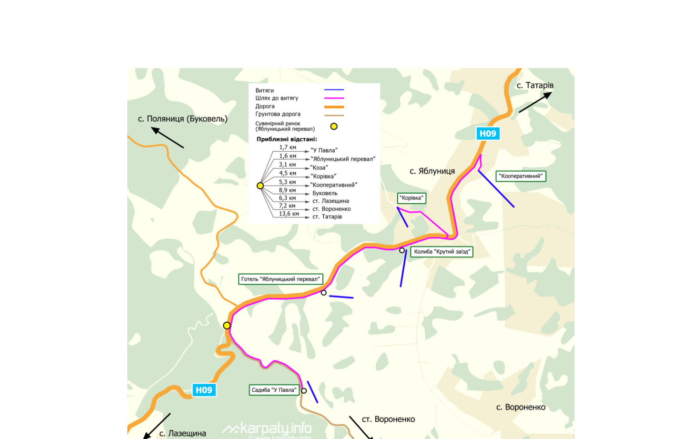

Курорт, створений природою та досвідом: понад 6 гектарів власної території серед смерек, полонин і гірського повітря Яблуниці.
KOZA Mountain Resort — всесезонний готельний комплекс у селі Яблуниця, на висоті понад 900 м над рівнем моря. Ми будували курорт так, як будують карпатську хату: з дерева, з любов'ю і з розрахунком на покоління.
Сьогодні на понад 6 гектарах власної території розташовані готель і котеджі в автентичному стилі, два ресторани, власний гірськолижний схил із витягом, озеро та понад 50 об'єктів інфраструктури. Взимку тут катаються, влітку — мандрують еко-стежками та відпочивають біля води.
Ми поруч із Буковелем — але без його черг і метушні. Тиша, панорами Горган і карпатська кухня — те, заради чого гості повертаються до нас щороку.


Хвилина з життя KOZA Mountain Resort — схил, котеджі та карпатські краєвиди, які чекають на вас.
Схема витягів і шляхів до них у районі Яблуницького перевалу. Витяг «Коза» — за 3,1 км від сувенірного ринку на перевалі, дорогою національного значення Н-09.

Усе на одній території: від сніданку з видом на гори до вечірнього катання освітленим схилом.
Номерний фонд і окремі котеджі в автентичному карпатському стилі з видом на гори.
Два ресторани локальної та європейської кухні, банкетні зали, тераси з панорамою.
Власна траса з витягом, системою освітлення для вечірнього катання та прокатом.
Лазня, чани, зони релаксу — відновлення після активного дня в горах.
Водойма з облаштованим берегом, пікнік-зони та простори для свят просто неба.
Понад 50 паркомісць, прокат спорядження, цілодобова рецепція.